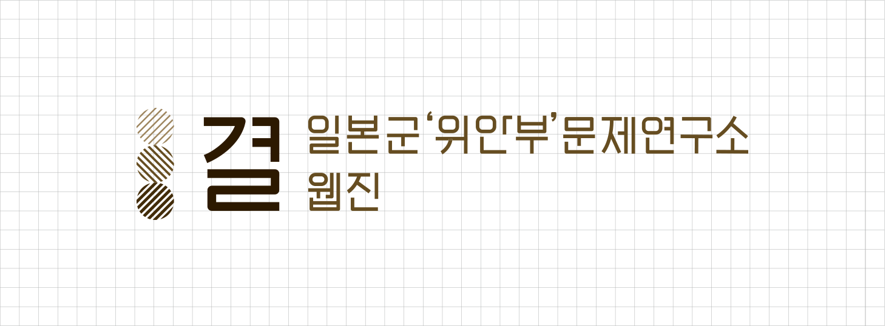

소개
- 일본군'위안부'문제연구소
-
일본군‘위안부‘문제연구소는 ‘위안부’ 문제에 관한 체계적인 조사와 연구를 수행하기 위해 설립되었습니다. 자료 발굴과 아카이브 구축을 통해 국내외에 산재한 ‘위안부’ 관련 자료를 수집·제공하고, 학술연구를 진작시키기 위한 다양한 연구사업을 진행합니다.
본 연구소는 일본군 ‘위안부’ 문제와 관련된 다양한 정보를 제공함으로써 연구자의 연구 활동을 독려하고 일반인들의 이 문제에 관한 이해를 심화시키기 위해 웹진을 발행하고자 합니다. 연구소의 웹진 결은 칼럼, 답사, 리뷰, 대담, 자료해제 등 다양한 콘텐츠를 통해 일본군‘위안부‘문제를 국내외에 알리고 여성 인권의 증진에 기여하고자 합니다.
- 일본군‘위안부‘문제연구소
웹진 <결> -
일본군‘위안부'문제연구소 웹진 〈결〉은 식민지 지배, 전쟁, 성, 인권, 폭력 등 다양한 이슈와 연결되어 한 마디로 요약하기 어려운 일본군 ‘위안부’ 문제, 그 복잡한 문제의 결을 촘촘히 살피고 펼쳐보자는 의미로 시작한 일본군‘위안부‘문제연구소의 웹진입니다.
일본군‘위안부'문제연구소 웹진 〈결〉은 역사, 정치, 문학, 외교, 문화, 여성운동 등 다양한 관점에서 ‘위안부’ 문제를 사유해 온 각계 전문가들의 연구 성과와 활동을 담고자 합니다. 치밀하고 깊이 있는 사유를 통해 ‘위안부’ 문제를 새롭게 이해할 언어를 모색하고, 이를 자료 설명, 연구자의 이야기 등 대중들에게 친숙하게 다가갈 수 있는 다양한 형태의 콘텐츠로 풀어내고자 합니다.
다 안다고 생각하기 쉽지만, 정작 얘기하려면 설명하기 어려운 이슈인 일본군 ‘위안부’ 문제. 사려 깊게 결을 펼치고 드러낼 때, 일본군 ‘위안부’ 문제는 그때 그분들의 삶을 넘어, 오늘을 사는 ‘나’의 삶에 단단하고도 깊이 있게 스며드는 역사가 될 것입니다.
Webzine Identity : 단단한 기틀을 마련하다

일본군‘위안부'문제연구소 웹진 〈결〉은 사실과 관점이 촘촘히 교차하는 과정을 통해, 일본군 ‘위안부’ 문제를 충분히 이해하고 보다 깊은 사유로 나아갈 토대를 제공하고자 합니다. 이러한 과정을 점점 짙어지는 세 개의 결로 표현했습니다. 세 개의 결은 일본군‘위안부'문제연구소 웹진 〈결〉의 가치인 ‘문제의 복잡성을 이해하기', ‘치밀하고 깊이 있게 사유하기', ‘내 문제로 사유하기’를 상징합니다.